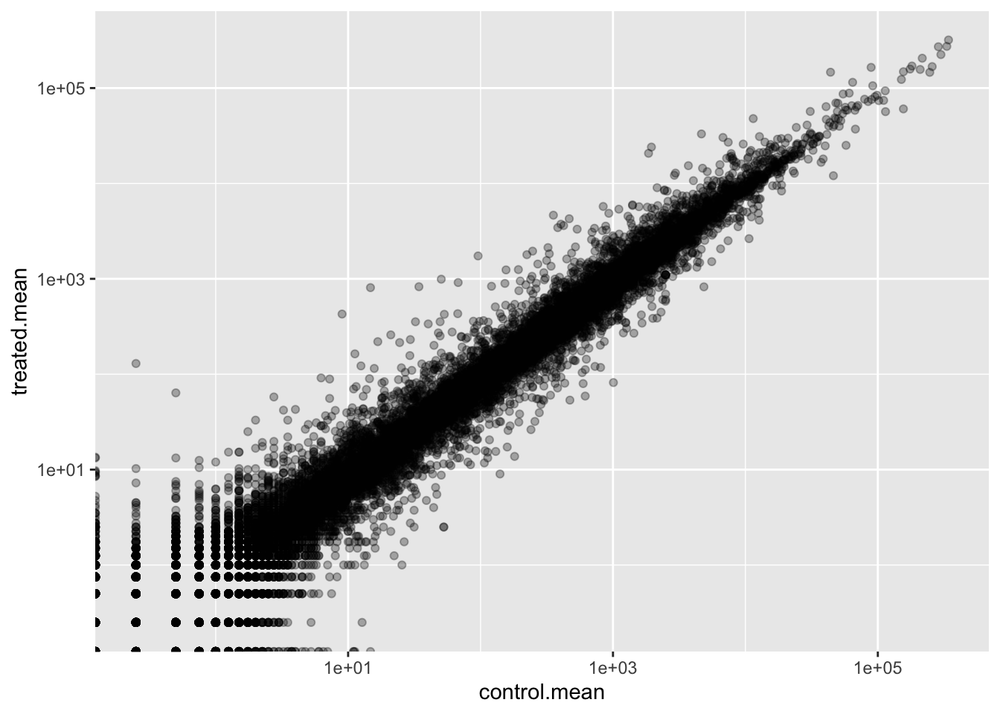
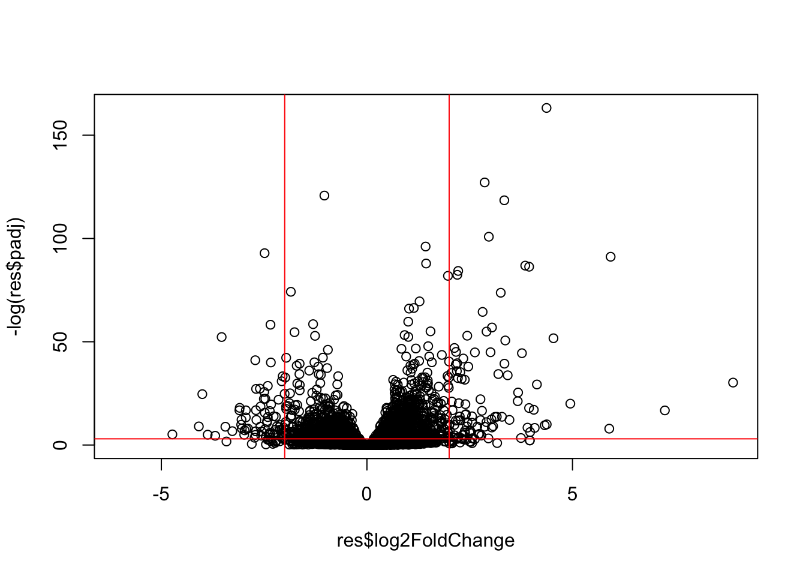
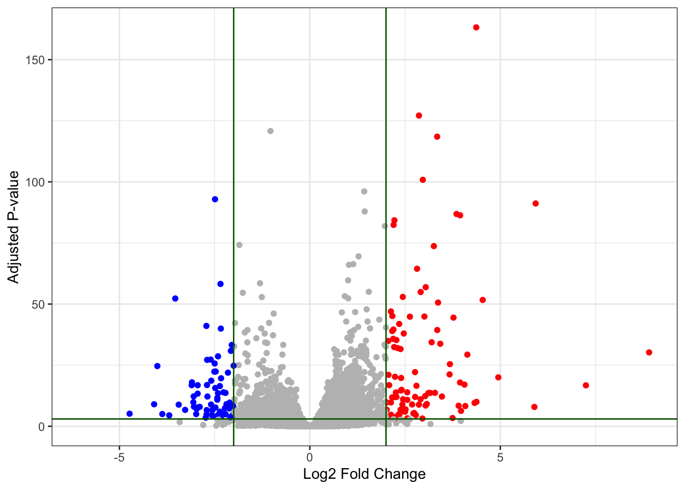

counts <- read.csv("airway_scaledcounts.csv", row.names = 1)
metadata<- read.csv("airway_metadata.csv", row.names =1)Class 13: RNASeq Analysis
#Background Today we will analyze some RNA Sequencing data on the effects of a common steroid drug on airway cell lines.
There are two main inputs we need for this analysis:
countData: counts for genes in rows with experiments in the columns -colData: or metadata that tells us about the design of the experiment (i.e. what is in the columns ofcountData)
Q1. How many genes are in this dataset?
nrow(counts)[1] 38694Q2. How many ‘control’ cell lines do we have?
metadata$dex[1] "control" "treated" "control" "treated" "control" "treated" "control"
[8] "treated"table(metadata$dex)
control treated
4 4 sum(metadata$dex=="control")[1] 4Toy differential gene expression
Let’s try finding the average or mean of the “control” and “treated” columns and see if they differ.
-1. First we need to find all “control” columns -2. Extract just the “control” values for each gene -3. Calculate the mean() for each gene “control” values
all(colnames(counts) == metadata$id)[1] TRUEThe $dex columns tells me whether we have “control” or “treated”
control.inds <- metadata$dex == "control"Extract just the “control” values for all genes
control.counts <- counts[,control.inds]Calculate the mean value for each gene in these “control” columns
control.mean <- rowMeans(control.counts)Q3. Do the same for “treated” to get a
treated.mean
treated.inds <-metadata$dex == "treated"
treated.counts <- counts[,treated.inds]
treated.mean <- rowMeans(treated.counts)
head(treated.mean)ENSG00000000003 ENSG00000000005 ENSG00000000419 ENSG00000000457 ENSG00000000460
658.00 0.00 546.00 316.50 78.75
ENSG00000000938
0.00 Q4.Make a plot of
control.meanvstreated.mean
Let’s store our mean values together in a data.frame for easier book-keeping
meancounts <- data.frame(control.mean, treated.mean)
head(meancounts) control.mean treated.mean
ENSG00000000003 900.75 658.00
ENSG00000000005 0.00 0.00
ENSG00000000419 520.50 546.00
ENSG00000000457 339.75 316.50
ENSG00000000460 97.25 78.75
ENSG00000000938 0.75 0.00plot(meancounts)
library(ggplot2)
ggplot(meancounts)+
aes(control.mean, treated.mean)+
geom_point(alpha=0.3)
We totally need to log transform this data as it is so heavily skewed!
plot(meancounts, log="xy")Warning in xy.coords(x, y, xlabel, ylabel, log): 15032 x values <= 0 omitted
from logarithmic plotWarning in xy.coords(x, y, xlabel, ylabel, log): 15281 y values <= 0 omitted
from logarithmic plot
library(ggplot2)
ggplot(meancounts)+
aes(control.mean, treated.mean)+
geom_point(alpha=0.3)+
scale_x_log10()+
scale_y_log10()Warning in scale_x_log10(): log-10 transformation introduced infinite values.Warning in scale_y_log10(): log-10 transformation introduced infinite values.
# TREATED/CONTROL
log2(20/20)[1] 0Doubling of the amount
log2(40/20)[1] 1Half the amount
log2(10/20)[1] -1A common “rule-of-thumb” is to focus on genes with a log2 “fold-change” of +2 as so-called UP REGULATED and -2 as DOWN REGULATED.
log2(80/20)[1] 2# 4x the original valueLet’s add a log2 fold-change value to our meancounts data.frame
meancounts$log2fc <- log2(meancounts$treated.mean/meancounts$control.mean)
head(meancounts) control.mean treated.mean log2fc
ENSG00000000003 900.75 658.00 -0.45303916
ENSG00000000005 0.00 0.00 NaN
ENSG00000000419 520.50 546.00 0.06900279
ENSG00000000457 339.75 316.50 -0.10226805
ENSG00000000460 97.25 78.75 -0.30441833
ENSG00000000938 0.75 0.00 -InfQ. Remove any “zero count” genes from our dataset for further analysis
to.keep <- rowSums(meancounts[,1:2]==0) == 0
sum(to.keep)[1] 21817#genes with non-zero countsmycounts <- meancounts[to.keep,]
head(mycounts) control.mean treated.mean log2fc
ENSG00000000003 900.75 658.00 -0.45303916
ENSG00000000419 520.50 546.00 0.06900279
ENSG00000000457 339.75 316.50 -0.10226805
ENSG00000000460 97.25 78.75 -0.30441833
ENSG00000000971 5219.00 6687.50 0.35769358
ENSG00000001036 2327.00 1785.75 -0.38194109Q. How many genees are “up” regulated at a log2fc threshold of +2?
sum(mycounts$log2fc >= 2)[1] 314Q. How many genees are “down” regulated at a log2fc threshold of -2?
sum(mycounts$log2fc <= -2)[1] 485Hold on, we are missing stats. Is it actually significant? We need to calculate the p-value to make sure of this.
#DESeq2 analysis
Let’s do this properly and consider the stats - are the differences in the means significant?
We will use DESeq2 to do this:
library(DESeq2)The first function we will use for this package sets up the input in the particular format that DESeq2 wants:
dds <- DESeqDataSetFromMatrix(countData = counts, colData= metadata, design = ~dex)Warning in DESeqDataSet(se, design = design, ignoreRank): some variables in
design formula are characters, converting to factorsWe can now run our DESeq analysis
dds <- DESeq(dds)estimating size factorsestimating dispersionsgene-wise dispersion estimatesmean-dispersion relationshipfinal dispersion estimatesfitting model and testingres <- results(dds)Peak at results
head(res)log2 fold change (MLE): dex treated vs control
Wald test p-value: dex treated vs control
DataFrame with 6 rows and 6 columns
baseMean log2FoldChange lfcSE stat pvalue
<numeric> <numeric> <numeric> <numeric> <numeric>
ENSG00000000003 747.194195 -0.3507030 0.168246 -2.084470 0.0371175
ENSG00000000005 0.000000 NA NA NA NA
ENSG00000000419 520.134160 0.2061078 0.101059 2.039475 0.0414026
ENSG00000000457 322.664844 0.0245269 0.145145 0.168982 0.8658106
ENSG00000000460 87.682625 -0.1471420 0.257007 -0.572521 0.5669691
ENSG00000000938 0.319167 -1.7322890 3.493601 -0.495846 0.6200029
padj
<numeric>
ENSG00000000003 0.163035
ENSG00000000005 NA
ENSG00000000419 0.176032
ENSG00000000457 0.961694
ENSG00000000460 0.815849
ENSG00000000938 NAResults figure: Volcano Plots
Plot of the Log2fc vs the P-value
plot(res$log2FoldChange, res$padj)
This p-value data is again heavily skewed, so let’s log transfrom it.
plot(res$log2FoldChange, log(res$padj))
We can flip the y-axis by adding a minus sign. This will make it easier to interpret
plot(res$log2FoldChange, -log(res$padj))
abline(v=-2, col="red")
abline(v=+2, col="red")
abline(h=-log(0.05), col="red")
Let’s add some color.
mycols <- rep("gray", nrow(res))
mycols [res$log2FoldChange <= -2] <- "blue"
mycols [res$log2FoldChange >= +2] <- "red"
mycols [res$padj >= 0.05 ] <- "gray"
plot(res$log2FoldChange, -log(res$padj), col=mycols)
abline(v=-2, col="darkgreen")
abline(v=+2, col="darkgreen")
abline(h=-log(0.05), col="darkgreen")
head(res)log2 fold change (MLE): dex treated vs control
Wald test p-value: dex treated vs control
DataFrame with 6 rows and 6 columns
baseMean log2FoldChange lfcSE stat pvalue
<numeric> <numeric> <numeric> <numeric> <numeric>
ENSG00000000003 747.194195 -0.3507030 0.168246 -2.084470 0.0371175
ENSG00000000005 0.000000 NA NA NA NA
ENSG00000000419 520.134160 0.2061078 0.101059 2.039475 0.0414026
ENSG00000000457 322.664844 0.0245269 0.145145 0.168982 0.8658106
ENSG00000000460 87.682625 -0.1471420 0.257007 -0.572521 0.5669691
ENSG00000000938 0.319167 -1.7322890 3.493601 -0.495846 0.6200029
padj
<numeric>
ENSG00000000003 0.163035
ENSG00000000005 NA
ENSG00000000419 0.176032
ENSG00000000457 0.961694
ENSG00000000460 0.815849
ENSG00000000938 NAMake a ggplot volcano plot with colors and lines as annotation along with nice axis labels.
mycols <- rep("gray", nrow(res))
mycols [res$log2FoldChange <= -2] <- "blue"
mycols [res$log2FoldChange >= +2] <- "red"
mycols [res$padj >= 0.05 ] <- "gray"
ggplot(as.data.frame((res)))+ aes(res$log2FoldChange,-log(res$padj))+
geom_point(col=mycols, ) + xlab("Log2 Fold Change")+ ylab("Adjusted P-value")+ geom_vline(xintercept = -2, col= "darkgreen") +
geom_vline(xintercept = +2, col= "darkgreen") + geom_hline(yintercept = -log(0.05), col="darkgreen") + theme_bw()Warning: Removed 23549 rows containing missing values or values outside the scale range
(`geom_point()`).
We need to add gene annotation
Gene symbols and different database IDs
Pathway Analysis
Find what biological pathways my differentially expressed genes participate in.